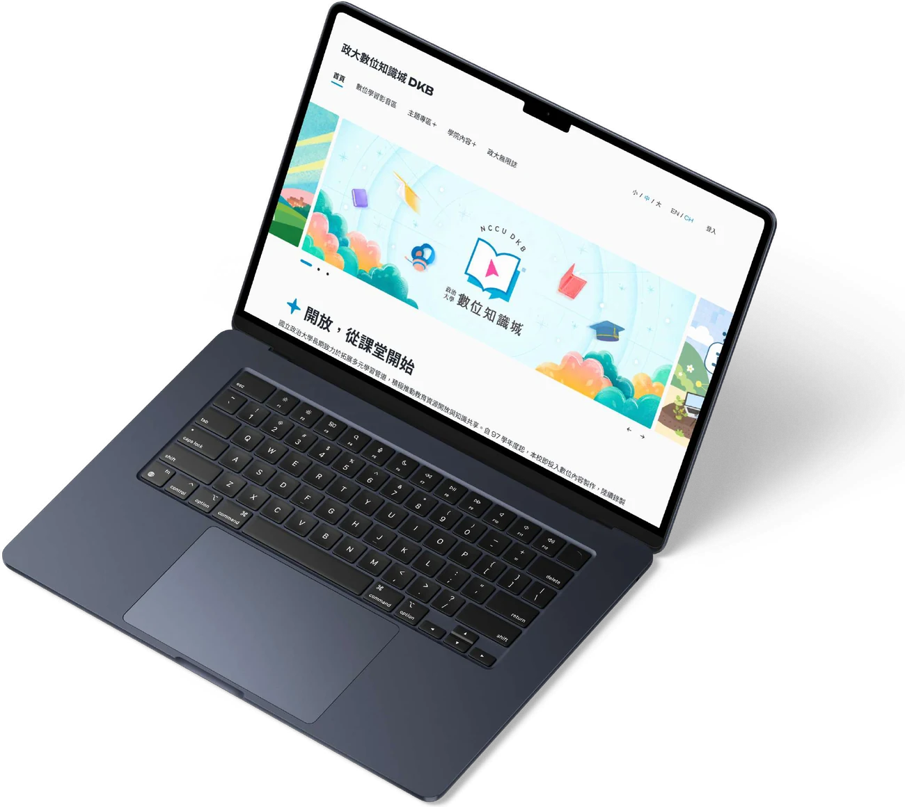
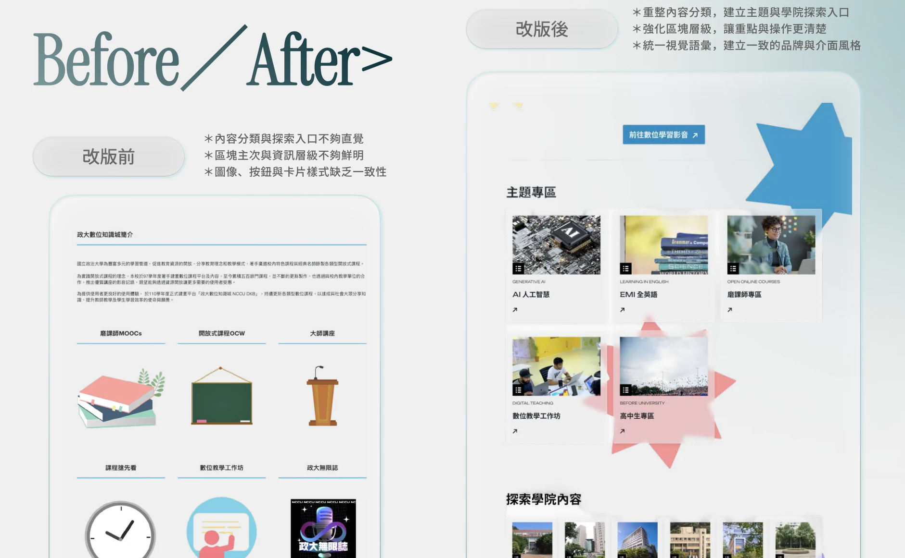

- 我的角色
- 獨立負責 UI/UX 設計與專案規劃
- 設計範圍
- 資訊架構、使用者流程、全站介面、互動原型
- 協作
- 與校方教師、專案主管及開發端對齊需求
專案背景
數位知識城匯集數位學習影音、主題專區與學院內容。原站的內容入口與區塊層級不易辨識，導覽、卡片與操作元件的樣式也不一致。改版沿用原站的主要分類，重新梳理每個入口、頁面之間的關係與瀏覽路徑。
設計重點
讓主題與學院都能成為探索起點
逐頁檢視資訊層級、導覽位置和互動方式，讓使用者既能依興趣找主題，也能按學院瀏覽資源。
串起從探索到學習的流程
規劃內容探索、課程報名與學習進度的使用者流程，和校方教師及開發端確認需求與實作細節。
統一全站介面的視覺語言
搭配台北黑體、Unbounded、毛玻璃與幾何圖形，建立導覽、卡片與互動元件的共同樣式。


設計心得
這是我首次獨立承接校方全站改版。把各頁的決策放回完整使用流程後，我更能判斷哪些介面問題應由導覽解決，哪些需要統一元件，並將設計選擇轉化為開發端可討論的細節。